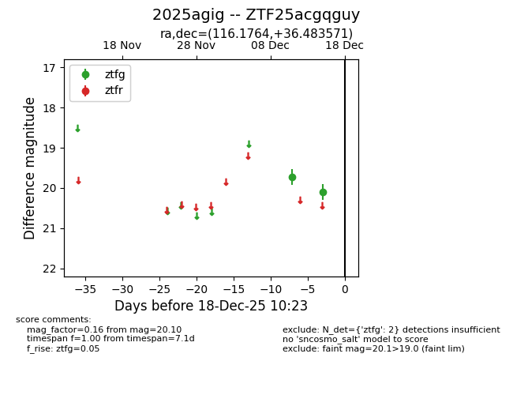
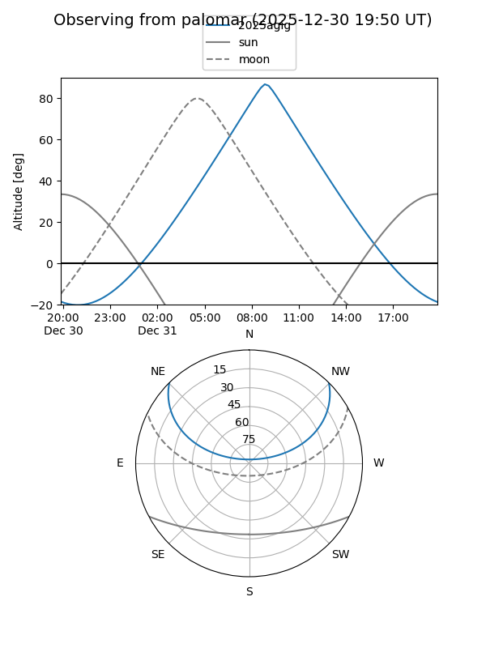

2025agig
Target 2025agig at 2025-12-18 11:17
Aliases and brokers:
FINK: fink-portal.org/ZTF25acgqguy
Lasair: lasair-ztf.lsst.ac.uk/objects/ZTF25acgqguy
ALeRCE: alerce.online/object/ZTF25acgqguy
TNS: wis-tns.org/object/2025agig
YSE: ziggy.ucolick.org/yse/transient_detail/2025agig
alt names
ZTF25acgqguy (ztf,fink_ztf)
2025agig (tns,yse)
Coordinates:
equatorial (ra, dec) = 116.1764,+36.48357
equatorial (HMS+DMS) = 07:44:42.33,+36:29:00.86
galactic (l, b) = (183.3173,+25.84560)
Photometry
last ztfg=20.10
2 ztfg detections
Lightcurve

Visibility


Additional plots